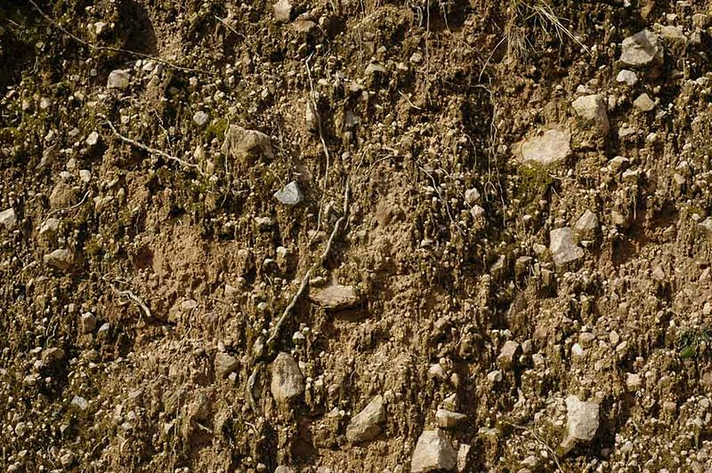
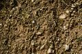

I love the smell of UnrealEd crashing in the morning. – tarquin
File:Legacy EarthRough0009 L.jpeg
From Unreal Wiki, The Unreal Engine Documentation Site

{kind=link}
Size of this preview: 800 × 532 pixels. Other resolution: 320 × 213 pixels.
{kind=link}
{kind=link}
Original file (1,024 × 681 pixels, file size: 162 KB, MIME type: image/jpeg)
|
This image was imported from the old Unreal Wiki and falls under its license. Consider creating a new image and uploading it under a Creative Commons license instead of reusing imported images. |
File history
Click on a date/time to view the file as it appeared at that time.
| Date/Time | Thumbnail | Dimensions | User | Comment | |
|---|---|---|---|---|---|
| current | 20:24, 31 March 2008 |  | 1,024 × 681 (162 KB) | Maintenance script (Talk) | {{Legacy image}} |
- You cannot overwrite this file.
File usage
The following page links to this file:
{kind=link}
{kind=link}
{kind=link}
{kind=link}
{kind=link}
{kind=link}
{kind=link}
{kind=link}
{kind=link}
{kind=link}